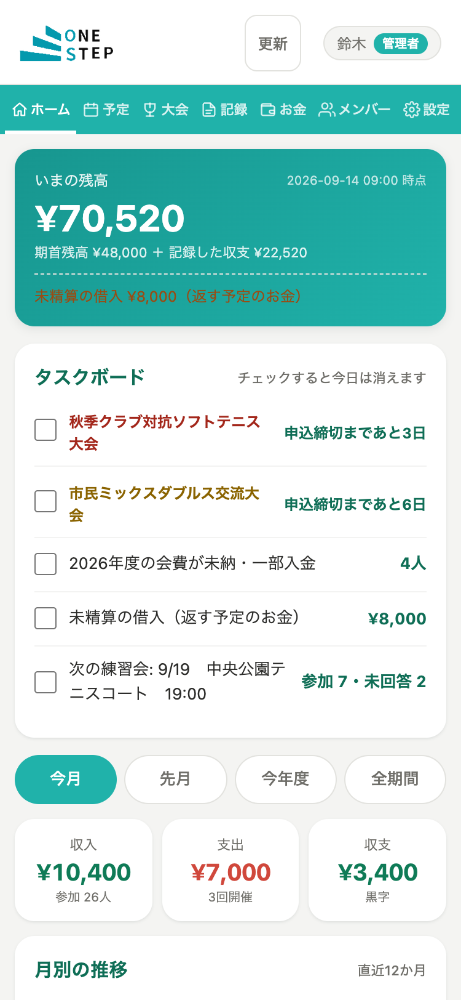
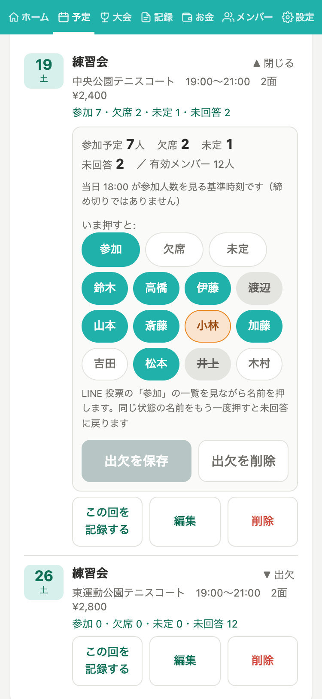
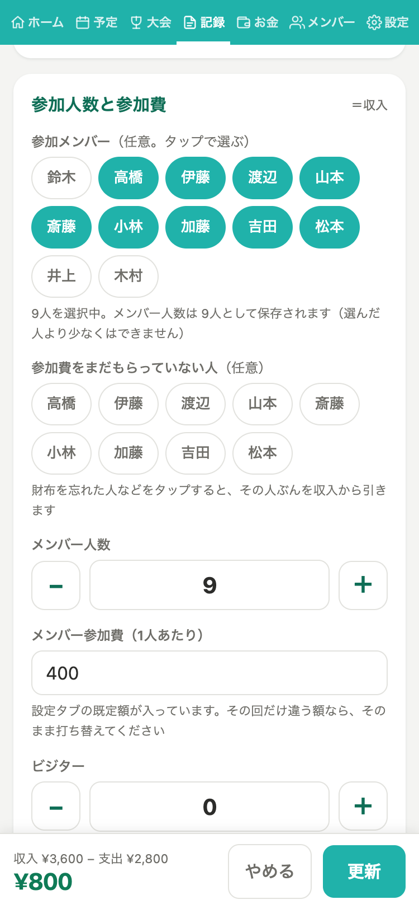
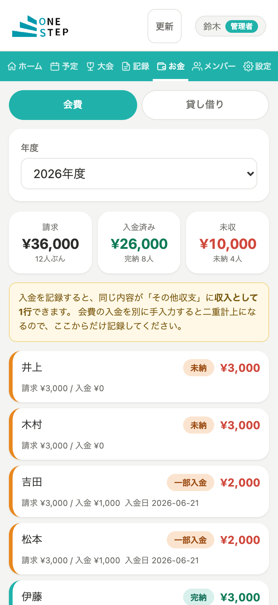
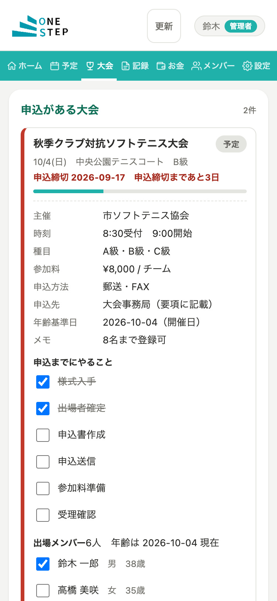
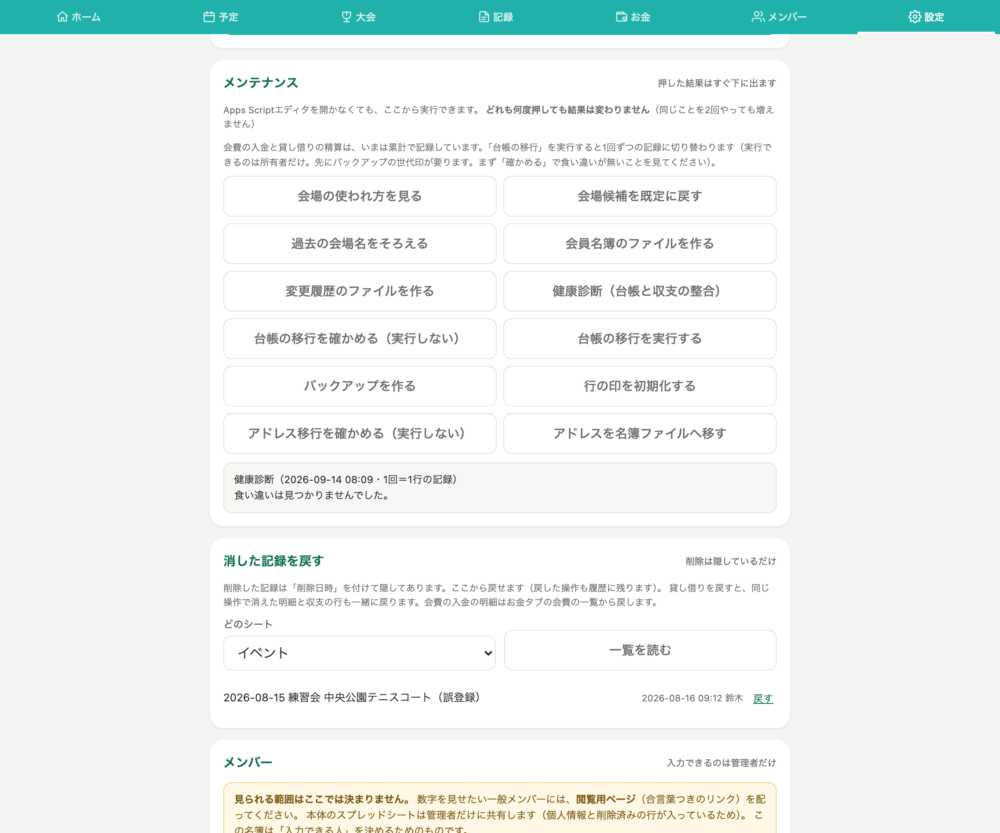

青森県八戸市の社会人ソフトテニスクラブ「OneStep」で実運用中。練習予定・出欠・参加費・年会費・収支・大会申込・会員名簿を、Google Apps Script と Google スプレッドシートで1つの画面にまとめました。

クラブの運営は「練習を開いてお金を集める」だけではありません。次のことが、LINE・複数のスプレッドシート・紙・記憶に散らばっていました。
毎回「今日は誰が来るのか」「誰がいくら払ったのか」「申込締切はいつだったか」を数え直し、探し直す状態でした。担当者が変わると引き継げないことも問題でした。
左が以前の流れ。矢印の1本1本が管理者の手作業でした。右が OneStep 導入後。メンバー側の LINE 投票は残したまま、管理者の転記・集計を自動化しています。
これとは別に、年会費・大会申込・会員情報もそれぞれ個別に管理。
年会費・大会申込・会員名簿・バックアップも同じ画面に一元化。
「新しいアプリで投票してください」とお願いすると、現場は必ず崩れます。メンバーの操作は1つも増やさず、管理者が投票結果を見ながら名前をタップするだけで、集計・記録・収支まで自動でつながるようにしました。

右上の R 番号は導入したリリースです。今後の予定（未実装）は 開発の進め方 に分けて書いています。
いまの残高、今月・先月・今年度・全期間の収入／支出／収支、直近12か月の推移、年度レポート。
大会の申込締切（7日前・3日前）、会費の未納、未精算の貸し借り、名簿の欠け、次の練習会の出欠人数を1か所に並べる。
月間カレンダー。月の予定をまとめて貼り付けて登録。コート面数とコート代を予定に持てる。
練習会ごとに、参加／欠席／未定を名前のチップで塗る。LINE 投票はそのまま、管理者が結果を写すだけ。
参加・欠席・未定・未回答を自動で数え、ホームのタスクボードにも出す。停止中のメンバーは数えない。
予定から日付・会場・時間帯を写して記録。参加メンバーは名簿からタップ、人数は±ボタン、入力しながら画面下に収支が出る。
練習会以外のお金（ボール・備品・エントリー費）も同じ収支に載る。行を開くと LINE に貼れる共有文をコピーできる。
年度ごとの請求・入金・未納。未納の人が上に並ぶ。入金は1回＝1行で収支にも自動で載る。
立て替えてもらったお金・貸したお金の台帳。残高の下に「財布の現金（見込み）」が出る。
要項の内容を写し、申込までの6ステップをチェック。締切は 7日前で黄・3日前で赤、Google カレンダーにも入る。
本名・住所・生年月日などは本体とは別のスプレッドシートに置き、管理者だけが開ける。各行に今年度の会費状態が出る。
協会の「登録クラブ会員名簿」と「クラブ対抗の申込書」の様式へ、名簿から自動で記入する。
Google ログイン不要の読み取り専用ページ。合言葉つき。個人情報と誰が未収かは出さない。
本体・名簿・変更履歴の3ファイルを世代印つきで複製。週1回の自動実行も設定できる。
削除は「隠すだけ」なので画面から戻せる。バックアップ世代からの復旧も用意。
台帳と収支の食い違い、スプレッドシートを直接編集した行を検出して一覧にする。
「月◯時間削減」のような数字は、実測してから掲載します。ここに書いた数字は本体のコード・仕様から確定できるものだけです。
| 業務 | Before | After |
|---|---|---|
| 管理場所 | LINE のトーク・投票、複数のスプレッドシート、手元のメモに分散 | OneStep の1画面に集約（予定・出欠・記録・収支・会費・大会・名簿） |
| 出欠 | LINE 投票の結果を見ながら別の場所で管理 | LINE 投票はそのまま。管理画面で参加／欠席／未定を名前チップで高速入力。未回答は自動 |
| 集計 | 参加人数・参加費を目視と手計算 | 自動集計。記録の入力中に画面下へ収支が出る |
| 記録 → 収支 | 練習の記録と収支を別々に転記 | 予定から記録へ写し、記録がそのまま収支になる（同じ予定から2件目は作れない） |
| 年会費 | 表を目で追って未納を探す | 未納の人が上に並ぶ。入金は1回＝1行で収支にも自動で載る |
| 大会申込 | 締切は記憶と紙の要項頼み | 7日前・3日前に色で警告し、Google カレンダーにも登録。申込書は様式へ自動記入 締切警告 7日前 / 3日前（本体の定数） |
| 会員情報 | 紙と個人メモ、協会様式は手書き | 管理者限定の別ファイルで管理。協会様式へボタン1つで書き出し |
| 復旧 | 明確な復旧導線なし | バックアップ（世代印つき）・削除の復元・健康診断 |
削減時間は実測してから掲載します（未計測のため数字は出していません）。
左が本番で毎週動いている処理。右は開発の進め方で、本番とは別枠です。Claude Code は要件整理・設計・実装・テストの支援に使っており、本番システムが AI を呼び出すことはありません。
図の元ファイル: assets/architecture/architecture.svg
入力できるのは名簿に登録された管理者だけ。誰が入力したかは Google アカウントで記録されます。
本名・住所・生年月日は本体とは別のスプレッドシートに置き、管理者だけが開けます。共有範囲を分けられる作りです。
Google アカウントの無いメンバーには、合言葉つきの読み取り専用ページを配ります。個人情報と「誰が未収か」は出しません。
誰がいつ何を変えたかを別ファイルに残します。履歴を書けないときは保存自体を止める（安全側）作りです。
削除は「隠すだけ」。消した記録は画面から一覧して戻せます。
スプレッドシートを直接編集した行には印が合わなくなり、保存時に止まって健康診断に出ます。手で直した数字が黙って混ざりません。
本体・名簿・履歴の3ファイルを世代印つきで複製。週1回の自動実行も設定でき、世代から復旧できます。
台帳と収支の食い違い、直接編集された行を一覧にします。設定タブのボタン1つで実行。
お金の計算、再送しても二重登録にならないこと、画面とサーバーの計算が同じ結果になることなどを固定しています。
すべての変更をブランチとレビューを通して本番に反映。CI でテストが走ります。
要件整理から実装・テストまで Claude Code を活用し、設計と判断の記録は Obsidian に残しています。小さなリリース（R1、R2…）に分け、毎回テストと差分の確認を通してから本番に反映します。




本番と同じ画面コードに、架空のクラブ（メンバー 12 名）のデータを埋め込んだ静的ページです。出欠を塗って保存すると集計が変わります（変更はブラウザの中だけで、再読み込みで元に戻ります）。
本番はクラブのスプレッドシート。デモは完全な架空データ（実在のメンバー・会場・金額は含みません）。
本番は Google Apps Script が権限・履歴・集計を処理。デモはブラウザ内の簡易な代役で、通信しません。
本番は Google ログインで管理者を判定。デモは管理者として開いた状態です。
Google カレンダー・Drive への書き出し、バックアップの複製はデモでは動きません（メッセージだけ出ます）。
「今の運用を変えずに、管理側の手間だけ減らしたい」という形での相談を歓迎します。小規模団体・店舗・部署の Google スプレッドシート × Google Apps Script による自動化が得意です。
README（発注者向けの説明）を読む